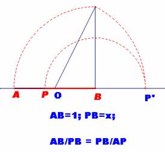
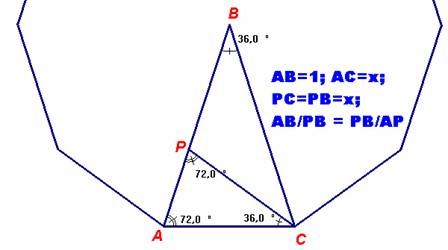
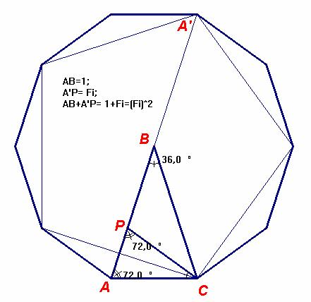

Problema 106.
El triángulo de oro.
Se llama triángulo de oro a un triángulo isósceles cuyo ángulo desigual mide 36º.
Constuye con Cabri dicho triángulo y a partir de él encuentra el valor de los tres primeros términos de la serie de Fibonacci: 1, f, f2 , donde el valor del número de oro es 1,61803..
Propuesto por la profesora Carmen ArrieroVillacorta, profesora de Matemáticas del IES Ramón y Cajal de
Madrid, y asesora de Nuevas Tecnologías de la Información y Comunicación en el Centro de Apoyo al
Profesorado de Hortaleza-Barajas de la Comunidad de Madrid.
Solución de F. Damián Aranda Ballesteros profesor de Matemáticas del IES Blas Infante en Córdoba (5 de julio de 2003)
Examinemos cómo los griegos construían el pentágono regular:
La construcción se basaba en la división del segmento unidad en media y extrema razón. P divide AB en media y extrema razón si el segmento mayor, x, es la media proporcional entre la longitud entera del segmento y la longitud del segmento menor; esto es, 1/x = x/(1-x) o lo que es equivalente: x2 + x -1 = 0.
|
 |
 |
Para probar que esta proporción está relacionada con el pentágono regular,
procederemos del siguiente modo:
Sea B un ángulo central de 36º en un círculo de radio unidad (ángulo central
que subtiende el lado de un decágono regular).
Entonces el ángulo <C= <BCA = 72º.
Sea CP la bisectriz del ángulo <ACB.
Se tiene que: AC = CP = PB = x; AP = 1- x
Como la bisectriz del ángulo de un triángulo divide a los lados opuestos
en dos segmentos que son proporcionales a los lados adyacentes,
1/x = x/(1-x),
y AB quedará dividido en media y extrema razón.
Por tanto, tenemos que x2 + x -1= 0, siendo la solución su raíz positiva x= .
A partir de este valor, obtenemos el número 1/x = f =1+x.
El lado del decágono regular así puede construirse, y consecuentemente el del pentágono, sin más que unir los puntos alternativos del decágono.
Podemos encontrar los valores de los tres primeros términos de la serie de Fibonacci: 1, f, f2 , de la siguiente manera:

Saludos de F. Damián Aranda Ballesteros.